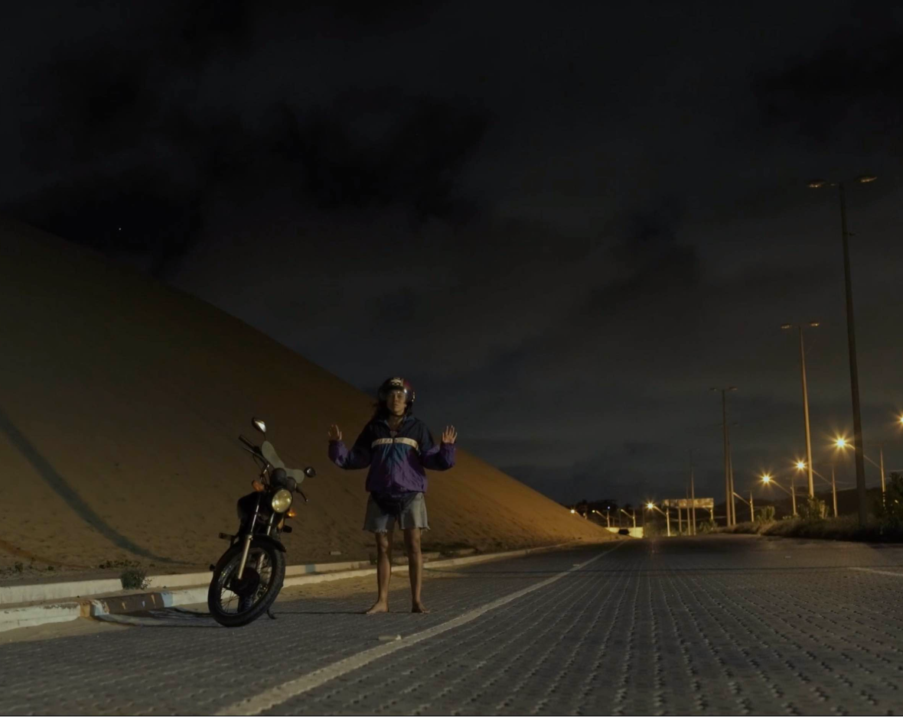
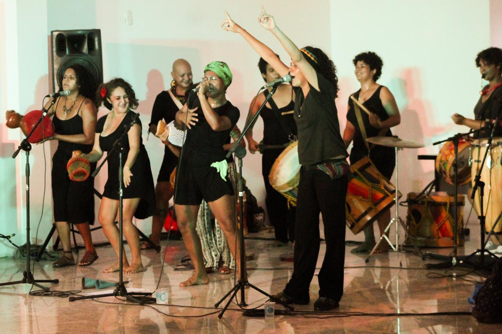
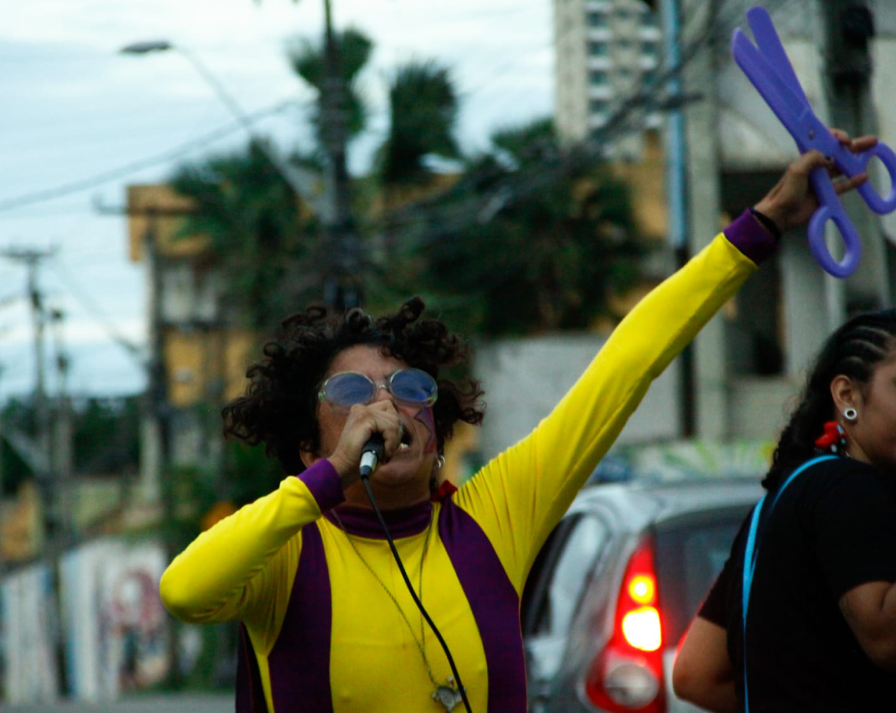

Artista
&
Arte-Educadora
Fortaleza-Ce
Fortaleza-Ce
Arte-educadora, atriz, poeta, musicista, percussionista, integrante e produtora executiva do grupo Tambores de Safo e do Bloco Cola Velcro da qual é cofundadora.
Projeto selecionado como parte do I Edital Cultura DendiCasa, pela Secretaria de Cultura do Estado do Ceará (Secult)
Doc-fic. Ganhou o premio de melhor filme na Mostra do Filme Livre RJ - 2019. Direção: Elena Meirelles e Lívia de Paiva.
Bloco carnavalesco de rua, formado por mulheres bissexuais, lésbicas e pessoas trans, criado com o objetivo de ser um espaço para festejo e mobilização LGBT durante os pré-carnavais de Fortaleza
Grupo de percussão, que pretende através da arte, dinfundir o pensamento feminista, bem como divulgar a cultura afro-brasileira e da população LGBT.
Personagem secundário no filme "Abril Vazio". Direção: Guto Parente. (2022)
Figurante do curta metragem “Espavento”. Direção: Ana Francelino (2019)
https://www.youtube.com/watch?v=xBLDoR6kqX0
Figurante do curta metragem “Momento, vício e boa sorte”. Direção: Diógenes Lopes do Coletivo Pode crer. (2015) https://www.youtube.com/watch?v=HF_JSiwwTbM
Participação no clipe “Revolucionando” Pagufunk-RJ (2015) https://www.youtube.com/watch?v=oZuG6v6SBEA
Participação na música e video clipe “Construção Coletiva Rap da Rua – Não vai ter Copa” - Coletivo Nigéria. (2014). https://www.youtube.com/watch?v=1QGqNDbnvNY
Participante do documentário “Quando Possível”. Direção: Beatriz Lizaviêta. Realizado pelos alunos da Fábrica de Imagens. https://www.youtube.com/watch?v=D2uZVEeP1Kc
Participante da REAL (Residência Artivista Feminista Libertária) – Taíba/CE – 2014; Gravação da Poesia “Mulher, mulher faz tudo o que quiser” (REAL-CE). https://www.youtube.com/watch?v=RV3UyF62iRg
Participante do Grupo de Teatro de Rua “Armaria”, criado no ano de 2013 na cidade de Belém do Pará
Trê-mo-iê
Tambores de Safo
Bloco Cola Velcro
